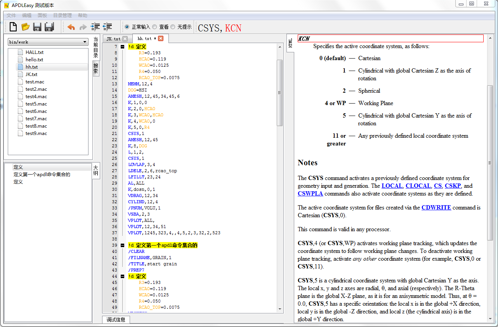

桌面端
在读研究生期间，涉及到很多数值计算，尽管有matlab，但是还是需要写一些控制界面。所以我对C/C++在桌面端的应用，有一定的经验。在这里我说说我用C++/Qt做过的一个编辑器。
力学分析软件 ANSYS 由专门的DSL语言(APDL)进行控制，但是ANSYS公司并没有为该语言提供编辑器。工程师只能使用普通的编辑器进行编辑，没有代码提示和补全，开发效率低下。
所以，我想制作一个针对APDL的代码编辑器。此编辑器的主要功能是：从ANSYS自带的帮助文件提取信息，实时的提醒函数及其参数含义，并且提供自动补全功能等。

下载地址：http://pan.baidu.com/s/1gdxVmPd